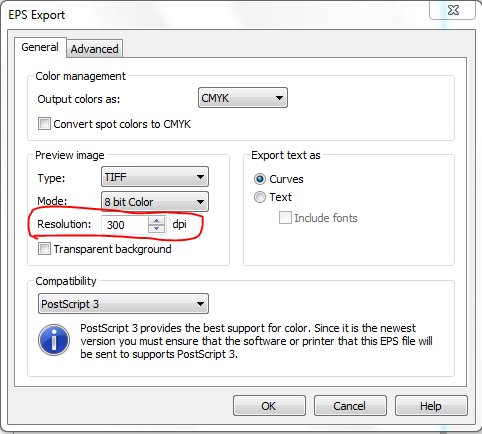

настройка dpi в экспортируемом eps файле
nav / 14.06.2011, 02:40/00:41
Форум:
Столкнулся с проблемой, уже описаной в теме про пакетный эспорт в pdf, но не увидел ответа.
При экспорте файлов из corel x5 в формат eps разрешение растровых изображений в eps оказывается равным 400 dpi, несмотря на то что разрешение исходного документа ниже. В чем проблема и как избавиться от ресемплинга.
nav, настройки экспорта измени.

Des425
То, что ты указал не разрешение экпортируемого растровых картинок, а разрешение превьюхи епса. Т.е. с этим разрешением епс будет виден в какой-либо верстальной программе типа пейджмейкера, кварка и.т.п. У меня в этом окошке вообще стоит 96 дпи и грейскейл, но растр экпортируетя с тем же разрешением и цветом, как в документе, хоть 300, хоть 900. У nav какая-то другая проблема.
EPS не поддерживает прозрачности в их "чистых" проявлениях, поэтому оные при экспорте конвертируются в растр 400dpi без сглаживания, и соответственно без прозрачности. Насколько мне известно, данное поведение ни коим образом не настраивается.
Sansho, дело в том, что речь не идет о прозрачностях. Речь идет о любых растровых объектах в исходном файле corel x5. В х4 поведение экспорта было иное. Если в исходном файле стояло разрешение файла, к примеру, 300 dpi, то и в экпортируемом файле это разрешение было 300 dpi, разрешение самого растрового объекта тоже отбрасывалось.
А сейчас 400dpi и нет ни какой возможности на это повлиять.
Прозрачности это не только эффект прозрачность, но и к примеру прозрачные пикселы в растре, о чём и речь!
дело в том, что даже если нет прозрачных пикселов в растре, то он все равно экспортирует как 400dpi
Экспортнул eps из корела, картинка как была 72 dpi, так и осталась.
Может цвета native помогут, а может с прозрачностью и эффектами баловаться надо меньше.
а почему вам так уперся епс?
я уже года два конверчу если не в пдф то в аи цс2 (!) и все нормально, даже прозрачности сохраняются.
Епс всёжеж векторный формат и на дпи он чихал большей частью так что перед экспортом растровых картиночек в него попользуй ресемпл.
Это относиться и к иллюстратору.